1016D20 LEFT CYLINDER HEAD - R.R. and replace gasket
- Path
- Procedures > 10 ENGINE > 1016 CYLINDER HEAD(S) > 1016D CYLINDER HEADS - R.R. > 1016D20 LEFT CYLINDER HEAD - R.R. and replace gasket
- Kind
- repair procedure (removal / refitting; the operation number is the code)
- Applies to
- engines: 2.0 TB, 2.4 20V, 3.0 V6, 3.2 V6; all production periods
- Interactive page
- https://sloeber94.github.io/elrnDB-lThss/en/#/184738
Applies to: engines: 3.0 V6, 3.2 V6; all production periods
 Removing
Removing
 Refitting
Refitting- Position the vehicle on a lift.
- Make sure that the ignition key is in the OFF position, then disconnect the negative battery lead.
See in Op. 7040D50 ENGINE COMPARTMENT UPPER SOUND INSULATION SHIELD - R.R.
See in Op. 1088B10 Engine coolant SUPPLY RESERVOIR - R.R.
See in Op. 1048A28 vacuum air circuit resonator pipe - r+r
See in Op. 1048A21 AIR INLET HOSE FROM INTAKE TO FILTER - R.R.
See in Op. 1048A23 Cold AIR INTAKE for air filter - R.R.
See in Op. 1048A11 COMPLETE AIR FILTER -R.R.
See in Op. 1008C10 Power unit REACTION ROD - Replace
See in Op. 1016A42 LEFT CYLINDER HEAD IGNITION COIL COVER - R.R.
See in Op. 1088E10 Radiator cooling FAN - R.R.
- Position a suitable container for collecting the coolant.
- Raise the vehicle
See in Op. 4450B04 Right FRONT WHEEL (one) - R.R.
See in Op. 7055B64 Engine compartment DUST SEAL in front wheel arch (one), left or right - R.R.
See in Op. 7055B42 FRONT WHEEL ARCH LINER (one), left or right - R.R.
See in Op. 1092G10 Engine components single drive BELT - R.R.
See in Op. 7055B54 PROTECTION/GUARD under engine - R.R.
See in Op. 1076B82 EXHAUST PIPE BETWEEN RIGHT PRECONVERTER AND CATALYTIC CONVERTER - R.R.
See in Op. 1080B38 LEFT CATALYTIC PRECONVERTER - R.R. or Replace Gasket
1. Release the retainers (1a) and disconnect the gearbox bowden cable (1b).
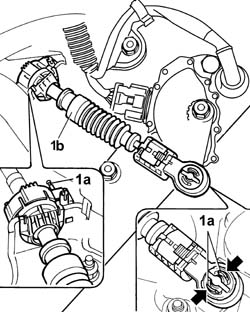
Applies to: engines: 3.0 V6, 3.2 V6; all production periods
1. Disconnect the connectors (1a) for the gearbox wiring.
 | Description | Connector |
|---|---|---|
1 | Automatic transmission solenoid valves | L050A |
| Description | Connector |
|---|---|---|
1 | Automatic transmission solenoid valves | L050B |
| Description | Connector |
|---|---|---|
1 | Automatic transmission solenoid valves | L050C |
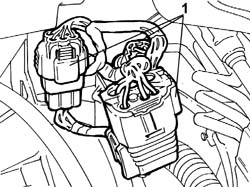
Applies to: engines: 3.0 V6, 3.2 V6; all production periods
1. Open the protective flap (1a) and undo the nut (1b) fixing the starter motor supply lead (1c) to the junction node and move the lead between the junction node and the motor aside.
| Description | Connector |
|---|---|---|
1b | Contact board | A005A |
| Description | Connector |
|---|---|---|
1b | Contact board | A005B |
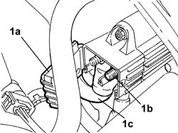
Applies to: engines: 3.0 V6, 3.2 V6; all production periods
1. Position a hydraulic jack under the gearbox casing and undo the two nuts (1a) fixing the gearbox side engine support (1b) to the bracket (1c), then lower the jack until the gearbox casing is resting on the suspension frame.
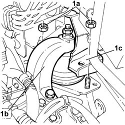
Applies to: engines: 3.0 V6, 3.2 V6; all production periods
1. Open the band (1a) retaining the power assisted steering pipes (1b) and move them aside.
2. Undo the upper bolts (2a) fixing the timing belt upper cover (2b) and remove it.
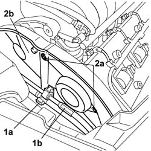
Applies to: engines: 3.0 V6, 3.2 V6; all production periods
1. Undo the two bolts (1a) fixing the power assisted steering pipe band mounting bracket (1b) and move it aside.
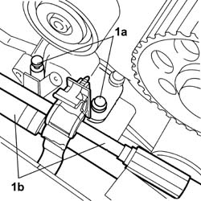
Applies to: engines: 3.0 V6, 3.2 V6; all production periods
- Raise the vehicle
See in Op. 1092A10 Crankshaft PULLEY - R.R. for versions with air conditioner
See in Op. 1088C24 Water pump PULLEY - R.R. with timing belt removed
-
1. Undo the six fixing bolts (1a) and remove the two lower timing belt guards (1b).
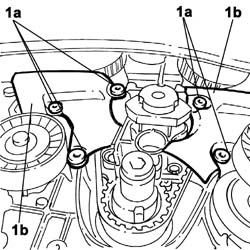
Applies to: engines: 3.0 V6, 3.2 V6; all production periods
1. Disconnect the rapid connector (1a) for the fuel pipe (1b) from the tank, undo the bolt (1c) fixing the pipe retaining duct (1d), then open the duct and release the pipe.
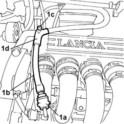
Applies to: engines: 3.0 V6, 3.2 V6; all production periods
1. Undo the two fixing bolts (1a) and remove the left head fuel manifold (1b) complete with injectors.
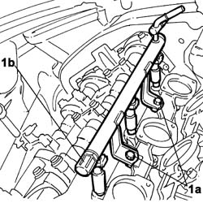
Applies to: engines: 3.0 V6, 3.2 V6; all production periods
1. Undo the bolt (1a) and remove the upper timing belt moving tensioner (1b).
- Release the timing drive belt from the driven pullies.
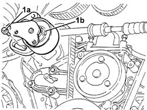
Applies to: engines: 3.0 V6, 3.2 V6; all production periods
1. Tighten the fixing bolt (1b) using the tool (1a) and remove the upper timing drive belt fixed tensioner (1c).
 | Description | Code | Function |
|---|---|---|---|
1a | Spanner for fixed tensioner | 1.870.749.000 | Loosen/tighten timing lower fixed tensioner fixing bolt |
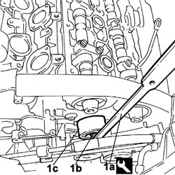
Applies to: engines: 3.0 V6, 3.2 V6; all production periods
1. Undo the bolts (1a) for the left head driven toothed pullies using the tool (1b) for counter-torque.
| Description | Code | Function |
|---|---|---|---|
1b | Support for counter-torque | 1.860.831.000 | Loosen/tighten exhaust side camshaft drive pulley bolt |
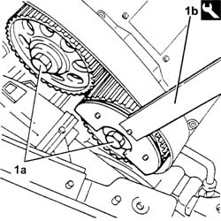
Applies to: engines: 3.0 V6, 3.2 V6; all production periods
1. Remove the left head toothed driven pullies (1a) using the tool (1b).
| Description | Code | Function |
|---|---|---|---|
1b | Spanner for rotating timing pullies | 1.860.831.002 | Loosen/tighten exhaust side camshaft drive pulley bolt |
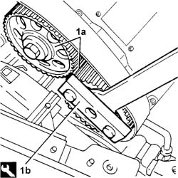
Applies to: engines: 3.0 V6, 3.2 V6; all production periods
1. Undo the four fixing bolts (1a) and remove the left rear guard (1b) for the timing belt.
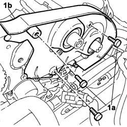
Applies to: engines: 3.0 V6, 3.2 V6; all production periods
1. Undo the fixing bolts (1a) and remove the left head intake manifold (1b).
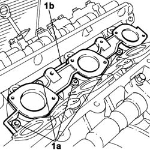
Applies to: engines: 3.0 V6, 3.2 V6; all production periods
1. Undo the two gearbox side bolts (1a) fixing the power assisted steering pump (1b).
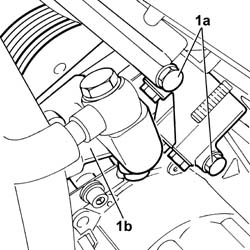
Applies to: engines: 3.0 V6, 3.2 V6; all production periods
1. Undo the timing belt side bolt (1a) fixing the power assisted steering pump (1b) and move the latter to the side leaving it connected to the pipes.
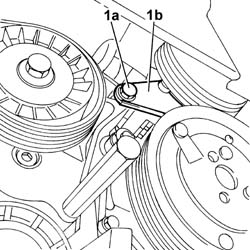
Applies to: engines: 3.0 V6, 3.2 V6; all production periods
1. Undo the nuts (1a) and remove the left cylinder head (1b).
- Remove the left head gasket
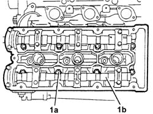
Applies to: engines: 3.0 V6, 3.2 V6; all production periods
Refitting
Removing- Fit a new left cylinder head gasket.
- Position the cylinder head on the cylinder block/crankcase.
1. Tighten the nuts (1a) fixing the cylinder head to the recommended torque, in stages, using the angular tightening tool (1b).
 | Value - daNm | Fastening | Component | Ø |
|---|---|---|---|---|
1a | 2,5 + 230° | Nut | CYLINDER HEAD FASTENERS | M12 |
| Description | Code | Function |
|---|---|---|---|
1b | Torque wrench | 1.860.942.000 | Cylinder head nuts angular tightening. |
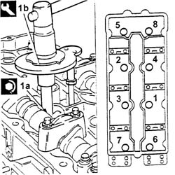
Applies to: engines: 3.0 V6, 3.2 V6; all production periods
- Position the power assisted steering pump and then tighten the fixing bolts to the recommended torque.
| Value - daNm | Fastening | Component | Ø |
|---|---|---|---|---|
. | 2.2 | Bolt | POWER STEERING PUMP SUPPORT/BRACKET | M8 |
- Position the intake manifold and gasket and tighten the fixing bolts.
- Position the timing belt left rear guard and tighten the fixing bolts.
- Fit the left head toothed driven pullies and secure them without tightening the bolts.
- Fit the upper fixed timing tensioner and secure it by tightening the bolt to the recommended torque.
| Value - daNm | Fastening | Component | Ø |
|---|---|---|---|---|
2.1 | Bolt | FIXED TENSIONER | M8 |
- Fit the moving timing belt tensioner and secure it without tightening the bolts.
See in Op. 1072B50 Air CHAMBER - R.R.
See in Op. 5510C18 Right cylinder head IGNITION COILS - R.R.
See in Op. 1016A34 Right TAPPET COVER - R.R. and Replace gasket
- Using the tool consisting of the USAG 279 MG bush and extension USAG 236 3/8 125 or an equivalent tool, undo and remove the spark plug for the right head timing side cylinder.
1. Fit the tool (1a), complete with dial gauge (1b), in the housing for the spark plug removed previously.
| Description | Code | Function |
|---|---|---|---|
1a | Extension | 1.870.896.500 | Engine tuning |
- Rotate the crankshaft through small rotations (in both directions) until the piston for the right head timing side cylinder no. 1 is at T.D.C. in the explosion stroke.
2. Remove the camshaft caps marked with the letters "B" and "G" for the right head and, in their place, fit the templates (2a) and (2b) with the writing "1.860.820.001 /DX A 1 CIL" and "1.870.896.600 / DX S 1 CIL", respectively.
| Description | Code | Function |
|---|---|---|---|
2a | Templates | 1.860.820.000 | Engine tuning |
| Description | Code | Function |
|---|---|---|---|
2b | Templates | 1.860.820.000 | Engine tuning |
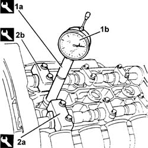
Applies to: engines: 3.0 V6, 3.2 V6; all production periods
1. Remove the camshaft caps marked with the numbers "7" and "4" for the left cylinder head and, in their place, fit the templates (1a) and (1b) with the writing "1.870.896.600 / SX S 4CIL" and "1.860.820.002 /SX A 6CIL".
| Description | Code | Function |
|---|---|---|---|
1a | Templates | 1.860.820.000 | Engine tuning |
| Description | Code | Function |
|---|---|---|---|
1b | Templates | 1.860.820.000 | Engine tuning |
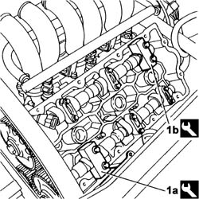
Applies to: engines: 3.0 V6, 3.2 V6; all production periods
- Loosen the bolts for the camshaft drive pullies using the special tool for counter-torque.
| Description | Code | Function |
|---|---|---|---|
. | Counter-torque | 1.870.896.300 | Lock the rotation of the driven toothed pulley |
- Fit the timing drive belt starting from the drive pulley and continuing in an anti-clockwise direction making sure that the drive branches are properly taut.
1. Fit the tool (1a) and secure it using bolt (1b) for the alternator and bolt (1c) for the water pump.
| Description | Code | Function |
|---|---|---|---|
1a | Belt tensioner | 1.860.950.000 | Timing belt tensioning |
2. Act on the belt tensioner tool nut (2a) until the moving reference on the belt tensioner (2b) is under the fixed reference.
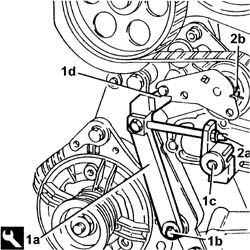
Applies to: engines: 3.0 V6, 3.2 V6; all production periods
1. Tighten the bolts (1a) for the camshaft drive pullies to the recommended torque using tools (1b) and (1c).
| Value - daNm | Fastening | Component | Ø |
|---|---|---|---|---|
1a | 6.8 - 8.4 | Bolt | TIMING DRIVEN PULLIES | M10 |
| Description | Code | Function |
|---|---|---|---|
1b | Counter-torque | 1.870.896.300 | Lock the rotation of the driven toothed pulley |
| Description | Code | Function |
|---|---|---|---|
1c | Extension for torque wrench | 1.870.896.400 | Tightening camshaft drive pulley bolts |
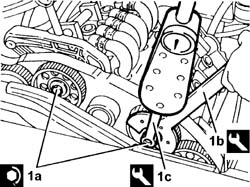
Applies to: engines: 3.0 V6, 3.2 V6; all production periods
- Remove the timing templates.
| Description | Code | Function |
|---|---|---|---|
Templates | 1.860.820.000 | Engine tuning |
- Fit the camshaft caps removed in place of the templates removed and secure them by tightening the bolts to the recommended torque.
| Value - daNm | Fastening | Component | Ø |
|---|---|---|---|---|
. | (Cylinder head side) 1.8 -2.0 | Bolt | CAMSHAFT CAPS | M8 |
- Rotate the crankshaft through two revolutions in its direction of rotation to allow the timing belt to bed in.
1. Check that the moving reference for the timing belt tensioner coincides with the fixed reference.
2. If the references are not aligned, gently release the tensioner tension acting on the nut for the tensioning tool until the reference coincide.
3. Tighten the bolts for the timing belt tensioner to the recommended torque.
| Value - daNm | Fastening | Component | Ø |
|---|---|---|---|---|
3 | (Cylinder head side) 1.7 -2.1 | Bolt | MOBILE TIMING TENSIONER | M8 |
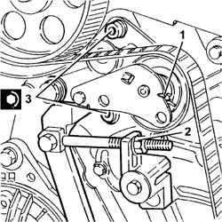
Applies to: engines: 3.0 V6, 3.2 V6; all production periods
- Remove the belt tensioner tool.
| Description | Code | Function |
|---|---|---|---|
. | Belt tensioner | 1.860.950.000 | Timing belt tensioning |
- Remove the dial gauge and the extension from the housing for the spark plug for the right head timing side cylinder no. 1.
| Description | Code | Function |
|---|---|---|---|
Extension | 1.870.896.500 | Engine tuning |
- Fit the spark plug for the right head timing side cylinder no. 1 tightening it to the recommended torque using the tool consisting of the USAGE 279 MG bush and the USAG 236 3/8 125 extension or an equivalent tool.
| Value - daNm | Fastening | Component | Ø |
|---|---|---|---|---|
. | 2.7 | Spark plug | SPARK PLUGS | M14 X 1.25 |
See in Op. 1016A34 Right TAPPET COVER - R.R. and Replace gasket
See in Op. 5510C18 Right cylinder head IGNITION COILS - R.R.
See in Op. 1072B50 Air CHAMBER - R.R.
- Position the left head fuel manifold complete with injectors and tighten the fixing bolts to the recommended torque.
| Value - daNm | Fastening | Component | Ø |
|---|---|---|---|---|
. | 0.9 | Bolt | COMPLETE FUEL PIPE | M6 |
- Connect the rapid connector for the fuel pipe from the tank, then position the pipe and tighten the fixing bolt for the pipe retaining duct.
- Position the two lower timing belt guards and tighten the six fixing bolts to the recommended torque.
| Value - daNm | Fastening | Component | Ø |
|---|---|---|---|---|
. | 0.9 | Bolt | TIMING BELT PROTECTIVE COVER(S) | M6 |
See in Op. 1088C24 Water pump PULLEY - R.R. with timing belt removed
See in Op. 1092A10 Crankshaft PULLEY - R.R. for versions with air conditioner
- Lower the vehicle.
- Correctly position the power assisted steering pipe band mounting bracket and tighten the two fixing bolts.
- Position the timing belt upper cover (2b) and tighten the fixing bolts to the recommended torque.
| Value - daNm | Fastening | Component | Ø |
|---|---|---|---|---|
. | 0.9 | Bolt | TIMING BELT PROTECTIVE COVER(S) | M6 |
- Position the power assisted steering pipes and close the retaining band.
- Raise the jack positioned under the gearbox casing and tighten the two nuts fixing the gearbox side engine support to the bracket to the recommended torque.
| Value - daNm | Fastening | Component | Ø |
|---|---|---|---|---|
. | 5 | Nut | POWER UNIT GEAR BOX END RIGID MOUNT | M10 X 1.25 |
- Connect the lead between the junction node and the starter motor to the actual node and tighten the fixing nut, then close the protective flap.
| Value - daNm | Fastening | Component | Ø |
|---|---|---|---|---|
. | 0.5 | Nut | TERMINAL/MOTOR LEAD | M8 |
- Connect the connectors for the gearbox wiring.
| Description | Connector |
|---|---|---|
. | Automatic transmission solenoid valves | L050A |
| Description | Connector |
|---|---|---|
. | Automatic transmission solenoid valves | L050B |
| Description | Connector |
|---|---|---|
. | Automatic transmission solenoid valves | L050C |
- Position the gearbox bowden cable and secure the retainers.
See in Op. 1080B38 LEFT CATALYTIC PRECONVERTER - R.R. or Replace Gasket
See in Op. 1076B82 EXHAUST PIPE BETWEEN RIGHT PRECONVERTER AND CATALYTIC CONVERTER - R.R.
See in Op. 7055B54 PROTECTION/GUARD under engine - R.R.
See in Op. 1092G10 Engine components single drive BELT - R.R.
See in Op. 7055B42 FRONT WHEEL ARCH LINER (one), left or right - R.R.
See in Op. 7055B64 Engine compartment DUST SEAL in front wheel arch (one), left or right - R.R.
See in Op. 4450B04 Right FRONT WHEEL (one) - R.R.
- < R1 > Lower the vehicle
See in Op. 1088E10 Radiator cooling FAN - R.R.
See in Op. 1016A42 LEFT CYLINDER HEAD IGNITION COIL COVER - R.R.
See in Op. 1008C10 Power unit REACTION ROD - Replace
See in Op. 1048A11 COMPLETE AIR FILTER -R.R.
See in Op. 1048A23 Cold AIR INTAKE for air filter - R.R.
See in Op. 1048A21 AIR INLET HOSE FROM INTAKE TO FILTER - R.R.
See in Op. 1048A28 vacuum air circuit resonator pipe - r+r
See in Op. 1088B10 Engine coolant SUPPLY RESERVOIR - R.R.
See in Op. 7040D50 ENGINE COMPARTMENT UPPER SOUND INSULATION SHIELD - R.R.
- Connect the negative battery lead, then close the boot.
- Remove the vehicle from the lift.
See in Op. 0010T21 ENGINE COOLANT - Check density and top up if necessary
-
Applies to: engines: 2.0 TB, 2.4 20V; all production periods
- Operation not available
Topics linked from this page (22)
- 0010T21 ENGINE COOLANT - Check density and top up if necessary
- 1008C10 Power unit REACTION ROD - Replace
- 1016A34 Right TAPPET COVER - R.R. and Replace gasket
- 1016A42 LEFT CYLINDER HEAD IGNITION COIL COVER - R.R.
- 1048A11 COMPLETE AIR FILTER -R.R.
- 1048A21 AIR INLET HOSE FROM INTAKE TO FILTER - R.R.
- 1048A23 Cold AIR INTAKE for air filter - R.R.
- 1048A28 vacuum air circuit resonator pipe - r+r
- 1072B50 Air CHAMBER - R.R.
- 1076B82 EXHAUST PIPE BETWEEN RIGHT PRECONVERTER AND CATALYTIC CONVERTER - R.R.
- 1080B38 LEFT CATALYTIC PRECONVERTER - R.R. or Replace Gasket
- 1088B10 Engine coolant SUPPLY RESERVOIR - R.R.
- 1088C24 Water pump PULLEY - R.R. with timing belt removed
- 1088E10 Radiator cooling FAN - R.R.
- 1092A10 Crankshaft PULLEY - R.R. for versions with air conditioner
- 1092G10 Engine components single drive BELT - R.R.
- 4450B04 Right FRONT WHEEL (one) - R.R.
- 5510C18 Right cylinder head IGNITION COILS - R.R.
- 7040D50 ENGINE COMPARTMENT UPPER SOUND INSULATION SHIELD - R.R.
- 7055B42 FRONT WHEEL ARCH LINER (one), left or right - R.R.
- 7055B54 PROTECTION/GUARD under engine - R.R.
- 7055B64 Engine compartment DUST SEAL in front wheel arch (one), left or right - R.R.